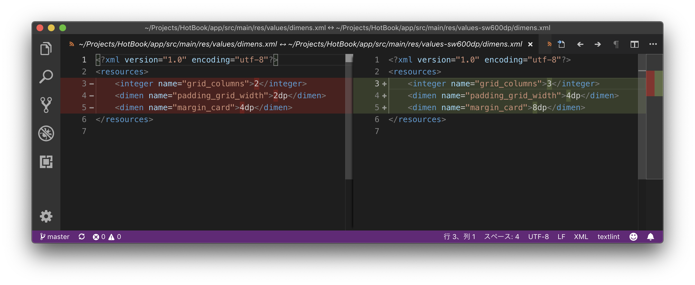

WinMergeの代わりにVisual Studio Codeを使う
2019-03-23 16:05:07 +0900 JST
Categories: VSCode
前職のSE時代はWinMergeというツールを大変愛用しておりました。
WinMergeとは2つのファイルの中身を比較し、その差をハイライトで知らせてくれるWindows向けのツールです。
Yahoo! ジオシティーズで公開されていたためジオシティーズがなくなったらWinMergeも消えるのでは・・・と危惧していましたが、しっかり移転されていました。
https://winmergejp.bitbucket.io
ひとまず安心(?)
WindowsのDiffツールはWinMerge一択なのですが、MacでDiffツールを探してもあまりピンときませんでした。(Macなんだからdiffコマンド使えって言わないで)
そんな中なんとVisual Studio CodeがファイルのDiff表示に対応していました！
まずは比較したいファイルを2つVisual Studio Codeで開きます。今回は私が開発していたアプリの設定ファイルを比較してみます。
ファイル名が同じだとどちらのディレクトリかまで教えてくれるのが嬉しいですね。
この状態でWindowsなら「F1」、Macなら「Cmd+Shift+P」を押します。入力ボックスが出るので、ここに compare と入力します。
すると「FILE: アクティブ ファイルを比較しています…」 というメニューが出るのでこちらをEnterで確定します。
次に比較したいファイルを選択するメニューが出るので、今表示されていないもう片方のファイルを選択します。

これでDiffの結果をみることができます！
WinMergeのように単純な行比較だけでなく、その行のどの部分が違うのかもハイライトしてくれます。
というかVSCode機能ありすぎてわからんぜよ・・・